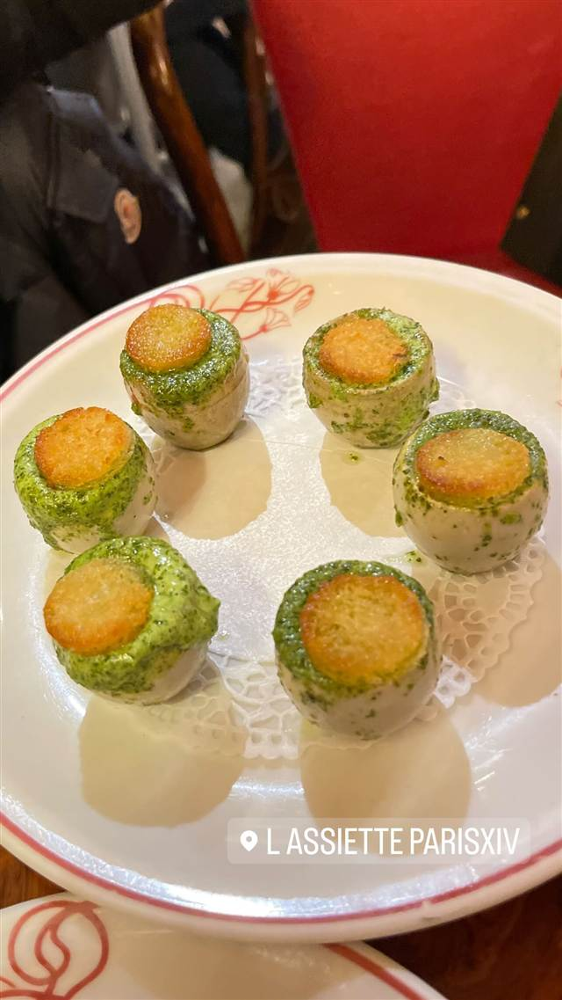
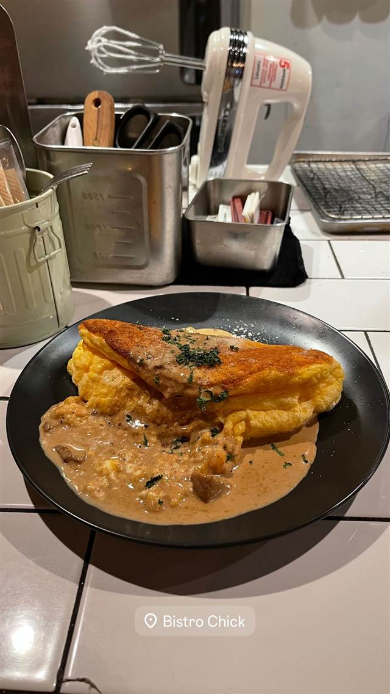

フレンチ · ビストロ · パリ14区
L'Assiette
1981年創業、パリ屈指と評されるカスレが看板のビストロ
L ASSIETTE PARISXIV
パリ14区、地下鉄ペルネティ駅近くのビストロ。1981年にリュリュ・ルソーが食料品店から改装し社交界の常連で賑わった名店を、2008年にアラン・デュカス仕込みのシェフ、ダヴィド・ラトゲベールが継承。今はパリ屈指と評されるカスレが看板。
TRIVIA
豆知識
- 1981年に女性店主リュリュ・ルソーが食料品店をビストロに改装、ミッテラン元大統領やイヴ・サンローランの盟友ピエール・ベルジェら社交界の常連で賑わった
- 常連は今も愛称で「シェ・リュリュ」と呼ぶ
- 店主はカスレ専門の美食組合「アカデミー・ユニヴェルセル・デュ・カスレ」の会員
REVIEWS
世間の評判
4.2Googleマップ
名物カスレの評価とばらつき
- 名物のカスレ（白いんげん豆の煮込み）の美味しさを評価する声が多い
- 木の家具と柔らかな照明の落ち着いた雰囲気を評価する声がある
- 訪問時期によって料理や接客の質にばらつきがあるという指摘もある
Restaurant Guru・Tripadvisor等
| 創業 | 1981年、食料品店からビストロに改装して開業 |
|---|---|
| 系譜 | 2008年、アラン・デュカスの元で「オ・リヨネ」「シェ・ブノワ」の厨房を率いたダヴィド・ラトゲベールが先代から引き継いだ。 |
| 看板 | カスレ |
| こだわり | 鴨のコンフィ、ラム肩肉、豚バラ、ソーセージを白いんげん豆と土鍋でじっくり煮込むカスレが看板で、パリ屈指と評される。 |
| 掲載・評価 | ミシュランガイド掲載店。 |
| どこから | 海外 |
| 予算 | 昼 €23 夜 €40～€60 |
| 場所 | Pernety駅 181 rue du Château, 75014 Paris, France |
| メモ | 地下鉄ペルネティ駅近く。水〜日曜の昼夜営業（月・火休）。 |
食べたもの：エスカルゴ / ヴォロヴァン
NEARBY
近い店・同じ系統の店
-
 ビストロ 中目黒駅
nou（ノウ）
看板のないプレハブ2階に隠れる千葉県産野菜のフレンチ
夜 ¥8,000～¥9,999
ビストロ 中目黒駅
nou（ノウ）
看板のないプレハブ2階に隠れる千葉県産野菜のフレンチ
夜 ¥8,000～¥9,999
-
 ビストロ 神泉
かしわビストロ バンバン
近江黒鶏を毎日直送、甘辛い炭火焼きが看板
夜 ¥4,000～¥4,999
ビストロ 神泉
かしわビストロ バンバン
近江黒鶏を毎日直送、甘辛い炭火焼きが看板
夜 ¥4,000～¥4,999
-
 ビストロ 神泉
LE BOUCHON OGASAWARA（ル・ブション・オガサワラ）
北海道から毎日届く魚介で作る本格ブイヤベース
夜 ¥6,000～¥7,999
ビストロ 神泉
LE BOUCHON OGASAWARA（ル・ブション・オガサワラ）
北海道から毎日届く魚介で作る本格ブイヤベース
夜 ¥6,000～¥7,999
-
 ビストロ 有楽町駅
ブラッスリーオザミ 丸の内
パリの下町を再現した店内で味わう鴨のコンフィ
昼 ¥2,000～¥2,999 夜 ¥3,000～¥3,999
ビストロ 有楽町駅
ブラッスリーオザミ 丸の内
パリの下町を再現した店内で味わう鴨のコンフィ
昼 ¥2,000～¥2,999 夜 ¥3,000～¥3,999
-
 ビストロ 三田・田町
Bistro Roven 三田
箸で切れるほど柔らかい自家製ロールキャベツが名物
夜 ¥5,000～¥5,999
ビストロ 三田・田町
Bistro Roven 三田
箸で切れるほど柔らかい自家製ロールキャベツが名物
夜 ¥5,000～¥5,999
-

ビストロ 麻布十番（徒歩約2分） ビストロ チック 麻布十番（Bistro Chick） 美大出身シェフが作る季節のソース添えスフレオムレツ 昼 ¥2,000～¥2,999 夜 ¥6,000～¥7,999